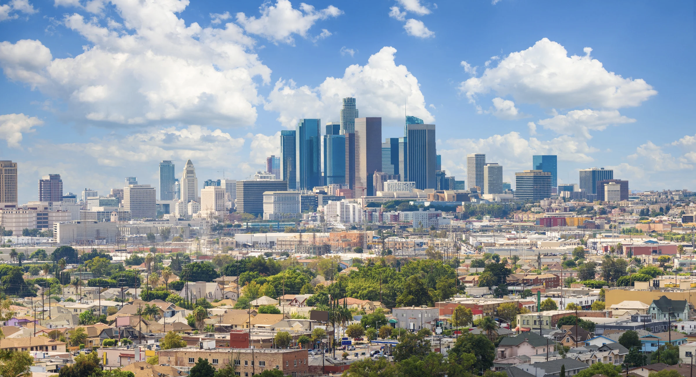
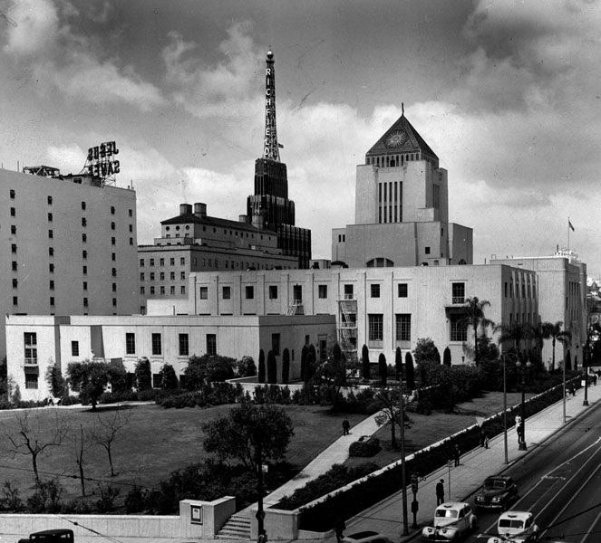
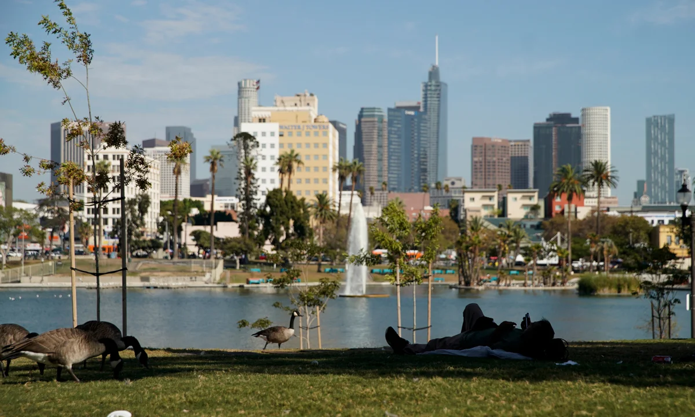

Home
Central / South Central LA
Central / South Central LA
Central and South Central Los Angeles is a dense core
encompassing neighborhoods such as Downtown LA, Boyle Heights,
South LA, and Watts. It is historically underserved in terms
of green infrastructure and public investment, facing high urban
heat exposure, air pollution, and concentrated traffic corridors.
Structural inequities continue to shape heat vulnerability and
environmental stress in this region.

Overview — Central / South Central LA
Average Los Angeles High Temperature:
• August (Hottest Month): 85° F
• December (Coldest Month): 67° F
Heat Island Index: +7–10°F warmer than coastal LA
Population: ~1.8 million residents
Racial/Ethnic Composition:
• ~60% Latinx
• ~25% Black
• ~10% White
• ~5% Asian / Other
Heat Vulnerability Indicators:
• High rates of cardiovascular and respiratory conditions
• Concentrated low-income housing and older adult populations
• Elevated exposure near highways and industrial areas

Heat Inequity Indicators
Tree Canopy Coverage: ~10–12% (County avg ~18%)
Median Household Income: ~$61,000
LA County Median Household Income: ~$88,000
Below 100% Poverty Threshold: 24% (almost double County average)
Heat Exposure:
• Average Energy Burden: 2.8% of income
• Highly un-walkable neighborhoods
• Bus and metro riders often exposed to heat on long waits
• Freeway-adjacent neighborhoods experience elevated heat

Historical Trends — Central / South Central LA
Temperature Change:
• +4°F rise since 1950
Urban Development:
• Rapid postwar industrial and residential growth
• Increased infrastructure construction
• Reduction of open land and public green space
• Nighttime warming intensified by dense urban development
Demographic Change:
• Growth of Latinx and Black populations after 1980
• Displacement and gentrification in region
• Ongoing economic and racial segregation patterns
Modern Disparity:
• Industrial facilities concentrated in low-income neighborhoods
• Minimal public investment in cooling, shade, and green infrastructure

Solutions & Interventions
Green Infrastructure:
• Tree planting initiatives and community greening projects
• Shade structures along busy streets and transit stops
Community Solutions:
• Neighborhood cooling hubs and youth programs
• Community advocacy for equitable heat protections
Government Policies:
• Region included in LA County Heat Action Plan
• Incentives for reflective roofs and heat-resistant materials

Resources & Links — Central / South Central LA
Emergency & Safety:
• LA County Cooling Centers
• Heat Illness Prevention Guide (Cal/OSHA)
Environmental Justice Organizations:
• Communities for a Better Environment
• Local tree-planting and heat advocacy groups
Data Sources:
• LA GeoHub temperature & canopy datasets
• Neighborhood Data for Social Change